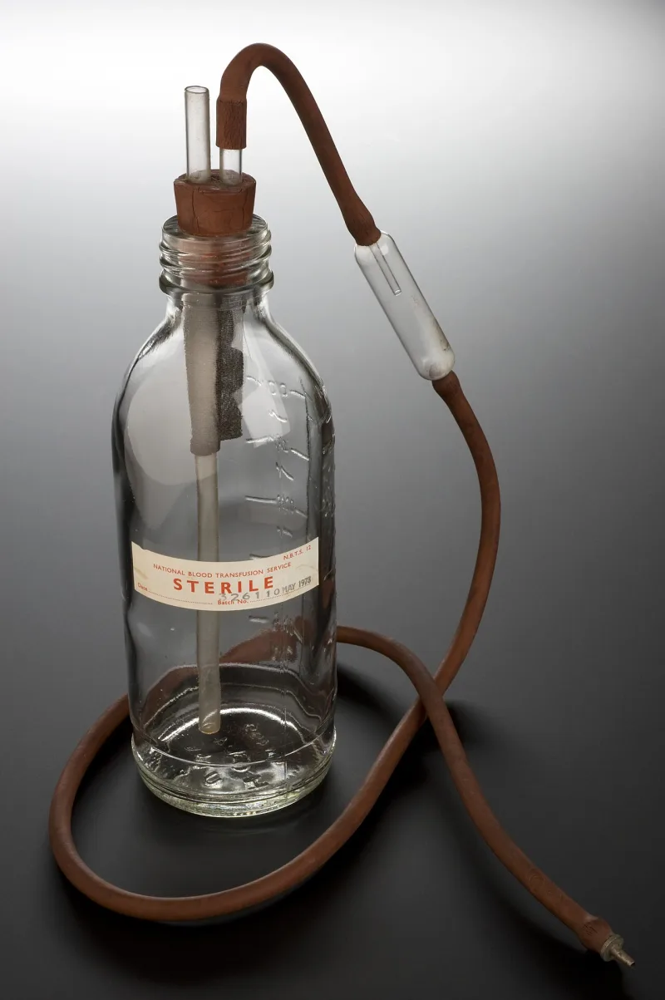
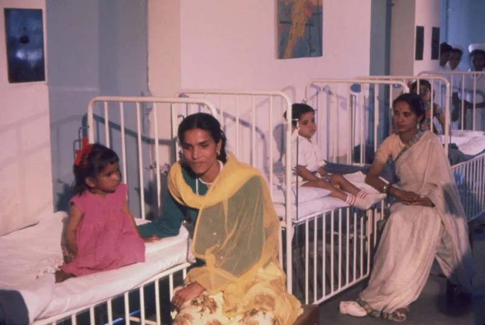

Awake! praised 26 youths who died refusing blood
AdmittedThe Watchtower's own publications admit these facts. You can make this point from their library alone.
The cover
The Awake! of May 22, 1994 carried photographs of 26 young people on its cover.
The title was "Youths Who Put God First." The caption on page 2 read: "In former times thousands of youths died for putting God first. They are still doing it, only today the drama is played out in hospitals and courtrooms, with blood transfusions the issue."
What was inside
The articles profiled minors who refused transfusions and died. They were presented as examples to follow.
Their resistance to doctors and to court orders was praised. The magazine noted with approval that children had been prepared in advance to face judges and hospital officials.
Why this one is different
Handle it slowly. These were real children, and the families loved them.
Whatever anyone concludes about Acts 15, this is the human cost of the doctrine, published and framed as inspiring by the same body that imposed the rule.
Their answer, at full strength
These young people are honoured as martyrs to conscience, exactly as Christians honour early believers who died rather than break God's law. Courage in the face of death is a biblical virtue; think of Daniel 3.
Medicine has since borne out some of the caution, given transfusion risks and advances in bloodless surgery. And the organization funds Hospital Liaison Committees precisely to find members the best care without blood, not to seek death.
How strong is this argument?
They admit this themselves. Nothing here rests on a hostile source; it is their own magazine.
The martyr defense assumes the point at issue. Martyrdom honours dying for God's law, and whether this rule is God's law is exactly what the 1945 date and the fractions policy call into question.
Children died under a rule the organization has redrawn more than once.
What to say
"If the rule about fractions can change twice, what do we say to the families in that 1994 magazine?"


How they answer this — at its strongest
They are honoured as martyrs to conscience, as the early church honoured its own.
The Witness response is that these young people are honoured as martyrs to conscience. Christians honour early believers who died rather than break God's law. This is the same thing. Courage in the face of death is a biblical virtue, as in Daniel 3. It is not a scandal.
Medicine has since borne out much of the caution, given transfusion risks and advances in bloodless surgery. And the organization funds Hospital Liaison Committees. Those exist to help members find the best care without blood, not to seek death.
The verdict
They admit it themselves. Go slowly: those were real children, and they were loved.
The cover, the caption and the profiles are their own magazine. Nothing here rests on a hostile source.
The martyr framing assumes the point at issue. Martyrdom honours dying for God's law. Whether this rule is God's law is exactly what the 1945 date and the fractions policy call into question. Children died for a rule the organization has redrawn more than once.
Severity is critical. Go slowly in conversation. The families in that magazine were grieving parents who believed they were obeying God.
Sources
- Awake! May 22, 1994 — From Our Readers follow-up (wol.jw.org, primary confirmation of issue)
- AJWRB — Watchtower category (cover reproduction and analysis)
- Paul Blizard — Why did these kids die?
- The Nation — Inside JW blood transfusion controversy